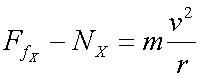

The Y-direction equation becomes:
| Y: |
The X-direction equation  becomes:
| X: | |
Since we are interested in finding the maximum velocity before skidding we can require that the frictional force have its maximum value, ie Ffrictional = FStatic = mN
so our two equations become:
| Y: | |
| X: |
Which can be combined to give:
and which simplifies to: